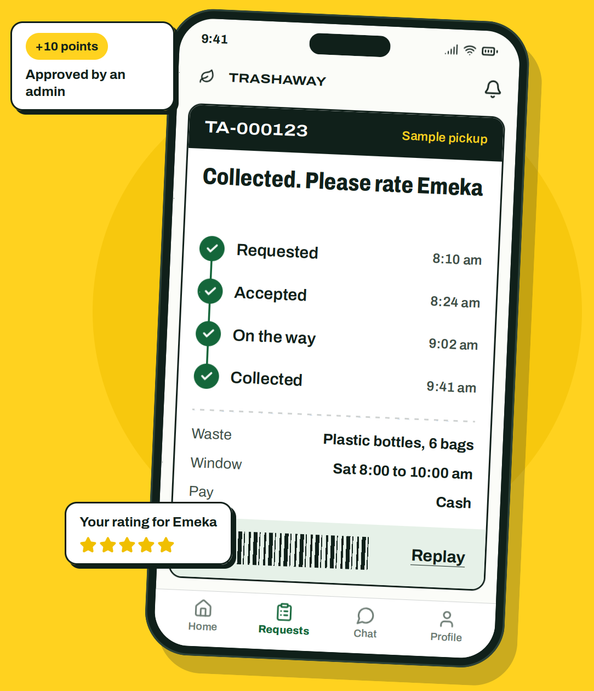

NITDA INNOVATION CHALLENGE 2.0
TRASHAWAY
Book a waste pickup. Track it until it’s collected. In your own language.


NITDA INNOVATION CHALLENGE 2.0
Book a waste pickup. Track it until it’s collected. In your own language.

THE PROBLEM
of Nigeria’s waste is collected through a formal system
of solid waste generated in Nigeria every year
from floods in 34 states in 2024; 740,743 displaced
Sources: National Policy on Solid Waste Management (2020); Africa Check; National Economic Council (2024)
WHO IT FAILS
No reliable way to book a pickup, and most services work only in English.
Informal collectors have no steady way to find jobs or build trust with households.
Little data on where waste builds up or where illegal dumping happens.
“There used to be garbage trucks that came by twice a week, but now we barely see them.”
Ifeanyi, resident of Arab Road, Kubwa, Abuja · Africa Housing News, 12 Nov 2024
THE CHALLENGE WE WERE SET
“How can technology be used to improve waste collection efficiency, reduce environmental pollution, and create a more reliable and accessible waste management system across Nigeria?”
Key challenge question, TRASHAWAY challenge page, NITDA Innovation Challenge 2.0
THE SOLUTION AND HOW IT WORKS
Book a pickup, track it to the door, and get paid per kg for recyclables.
Accept general-waste jobs nearby on a phone and earn steady income.
A dumping hot spot map, plus how much waste was kept out of landfill.
LIVE DEMO
CYBERSECURITY AND DIGITAL TRUST
A one-time code to sign in. Sessions end after 7 days.
The assistant drafts. Nothing books until you tap.
Only admin-approved collectors see jobs.
Your phone shows only after a collector accepts.
Every pickup is rated, so trust is earned.
SUSTAINABILITY AND ROLLOUT
Running cost: about ₦80,000 a month in the pilot (hosting, AI assistant, email, domain)
FUTURE SCOPE
Fill-level sensors on shared bins book a pickup at about 80% full. Later, two compartments split recyclables from general waste.
Recyclers pay residents per kg in cash, airtime or points. Councils see tonnes kept out of landfill.
Collectors get a route plan built from booked pickups and full bins, so trucks drive less.
More local languages, voice-first help and low-data use, so every resident can book.
THE TEAM AND OUR ASK
Practical today. Scalable tomorrow. Impactful for every street.